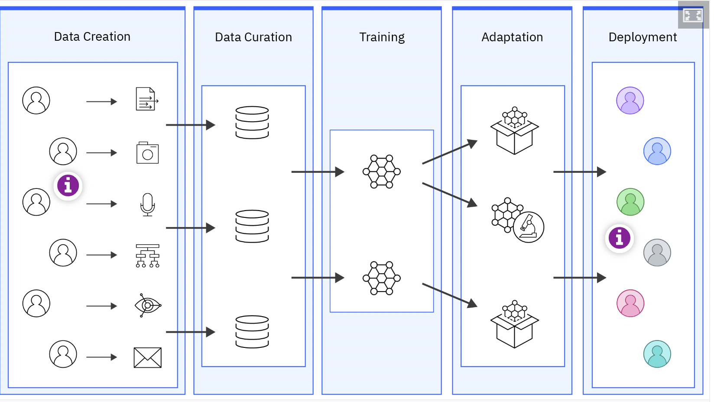
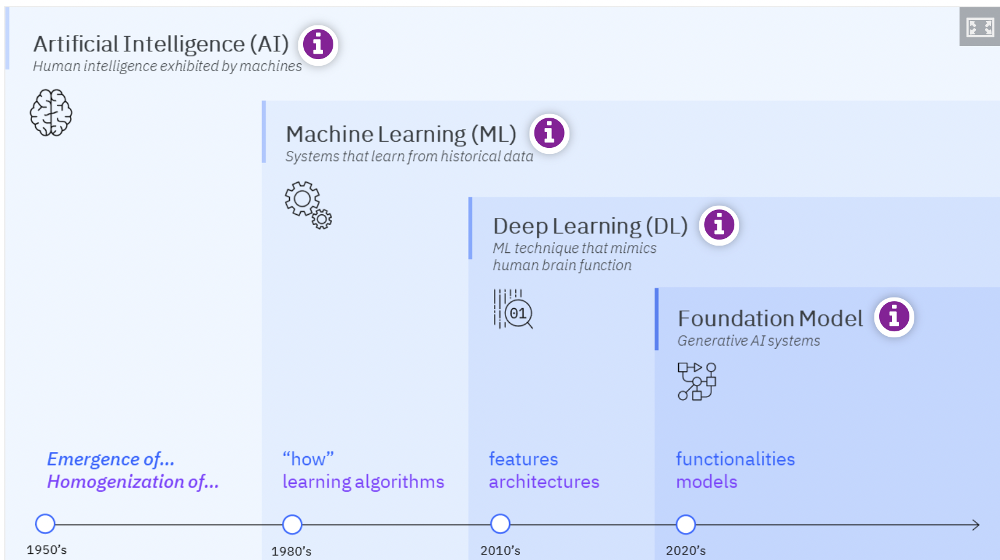

Prompt Engineering
Notes Collected From IBM
Free Learning!
~Gabriel
Foundation model ecosystem
Discussions of foundation models usually focus on the model architectures, the training, and the number of parameters, skipping over the crucial role people play during data creation and deployment. The social impact of a foundation model also depends on the whole ecosystem. Foundation models are unfinished intermediate objects that can be adapted to many downstream applications, by an entirely different entity for unforeseen purposes.
People are a critical weak point in a company's information security: the same holds for foundation models. People are the ultimate source for training foundational models, and also the recipients of the benefits or harms downstream. These two groups of people might also be different as shown by the colorization of the individuals.
The early implementations of generative AI have shown issues with accuracy and bias, and have been prone to hallucinations. Still, the inherent capabilities of generative AI can fundamentally change business and how work gets done. A focus on people is critical to an enterprise's generative AI strategy.

The story of Artificial Intelligence
The story of AI has been one of increasing emergence and homogenization.
A central theme in the development of AI is that of increasing emergence and homogenization. To better appreciate the impact of emergence and homogenization, let's reflect on the rise of AI over the last 70 years. Only major events in the AI timeline are included in the visualization (click on the "i" in the image for more details).
- artificial intelligence
Any system capable of simulating human intelligence and thought processes is said to have “Artificial Intelligence” (AI)
- machine learning
Machine learning focuses on the use of data and algorithms to imitate the way that humans learn, gradually improving its accuracy.
- deep learning
Deep learning (DL) is a subset of machine learning that uses a neural network with multiple hidden layers.
- foundation model
Foundation models are trained on a broad set of unlabeled data that can be used for different tasks, with minimal fine-tuning.
Machine learning can be seen as a subset of artificial intelligence; deep learning can be seen as a subset of machine learning; foundation models can be seen as a subset of deep learning.Emergence and homogenization encapsulate the significance of foundation models.Emergence means that the behavior of a system is implicitly induced rather than explicitly constructed.Homogenization indicates the consolidation of methodologies for building machine learning systems across a wide range of applications. A foundation model is itself incomplete but serves as the common basis for building task-specific models via adaptation.
Generative AI refers to a set of AI algorithms that can generate new outputs, such as text, images, code, or audio-based on the training data.
Foundation models have led to the surprising emergence, which results from scale. Some very large language models (a type of foundation model focused on language-related data) allow in-context learning where the language model is adapted to a downstream task by providing it with a prompt. A prompt is a natural language description of the task the large language model must perform. This is an emergent property that was not specifically trained for or anticipated to arise.

What is Prompt Engineering?
A prompt (also called an input query) is the text that you submit for processing by a foundation model.
Prompting allows a model to perform many different tasks. The process of crafting prompt text to get the wanted outcome for a specific model and parameters is known as prompt engineering.
There exist at least five ways of interacting with a foundation model:
- Zero-shot prompting (also called prompting)
- One-shot prompting (also called prompting)
- Few-shot prompting (also called prompting)
- Data-driven tuning (also called fine-tuning)
- Training a model from scratch
The options are listed from using the least amount of computing resources and energy to using the most computing resources and energy. The action of designing prompts by hand is known as prompt engineering (part art, part science). Learning is sometimes used as a synonym for prompting (for example, zero-shot learning). Zero-shot, one-shot, and few-shot prompting refers to the number of examples you provide. Prompt-tuning is an efficient, low-cost way of adapting an AI foundation model to new downstream tasks without retraining the model and updating its weights. With data-driven tuning, you fine-tune a model by updating part of the model's weights. When you retrain a model from scratch, you update all the model's weights
Effective Prompting
- Instruction - an imperative statement that tells the model what to do.
- Context - contextual information in your prompt can nudge the model to the desired output.
- Examples - one or more pairs of example input and corresponding output showing the pattern you want the generated text to look like.
- Cue - text at the end of the prompt that is likely to start the generated output on a wanted path.